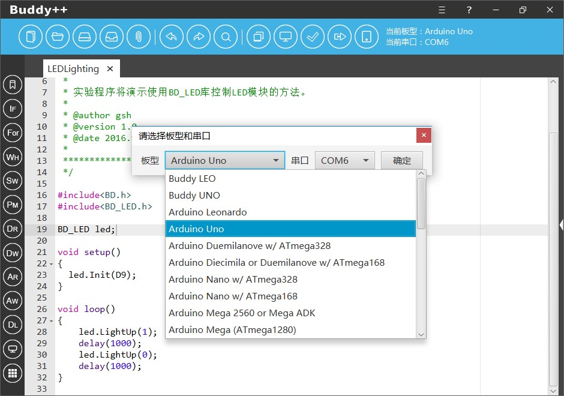
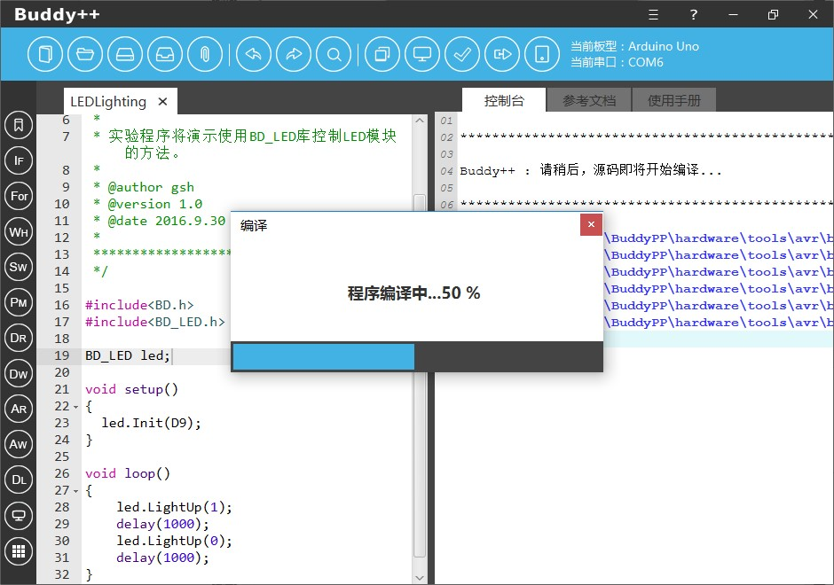
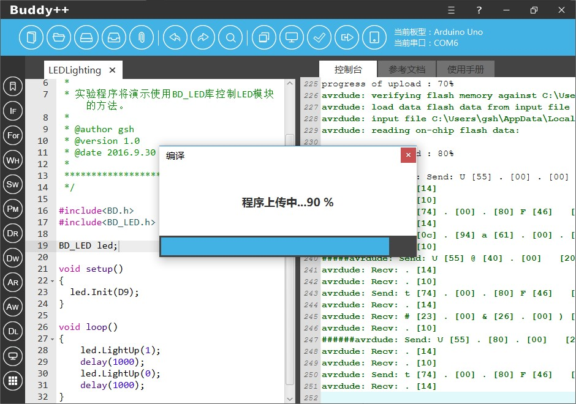
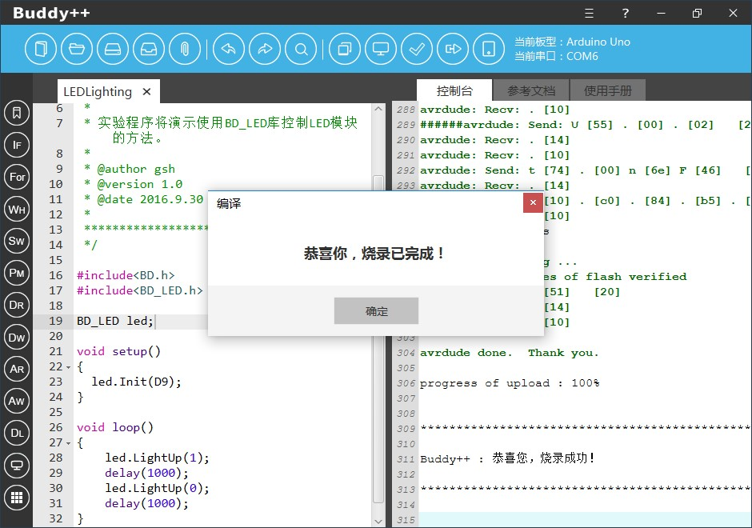

当开发者完成了程序设计，接下来就是要进行程序的编译与上传，点击Buddy++界面上方基础功能菜单中“编译与上传”按钮，主程序将会弹出独立的“编译与上传”窗口。在进行编译与上传之前开发者需要先选择接入的板型和选定通讯串口。

点击“编译”后编译操作将启动，窗口将会显示具体操作进度，控制台会实时显示当前的编译信息。如遇编译失败的情况，开发者可以细阅控制台输出的提示信息找出导致编译失败的具体原因。

如果开发者希望提高开发效率可以直接点击“编译与上传”按钮，Buddy++将会先完成编译操作然后进行上传操作。
同样地当烧录工作开始时，窗口将会显示具体操作进度，控制台会实时显示当前的编译与上传信息。如遇上传失败的情况，开发者可以细阅控制台输出的提示信息找出导致上传失败的具体原因。
需要提示一下，烧录的过程中开发板中的TX、RX指示灯会不停闪动。

